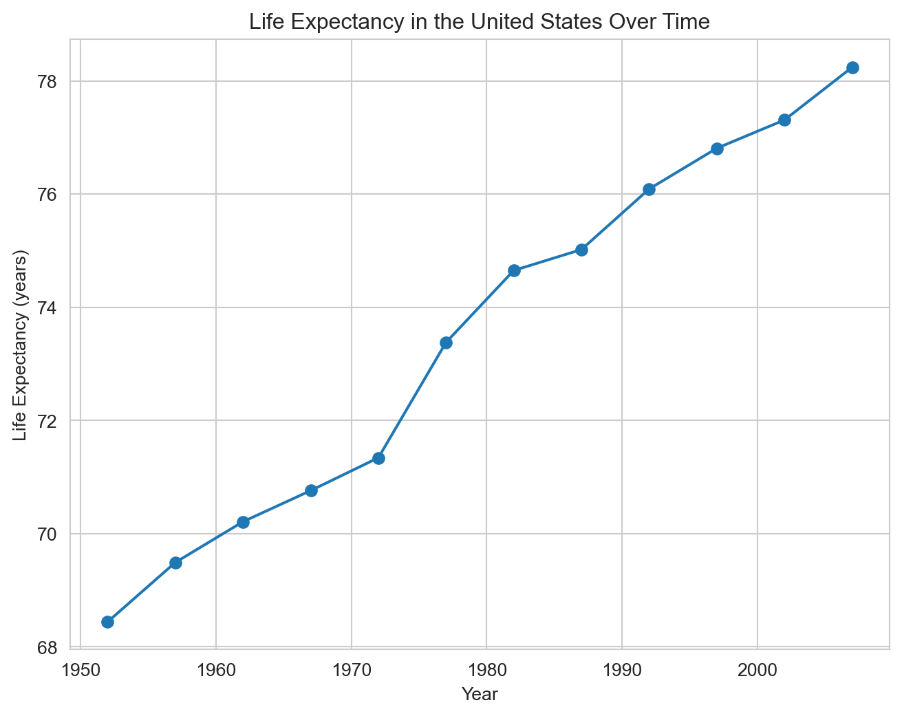
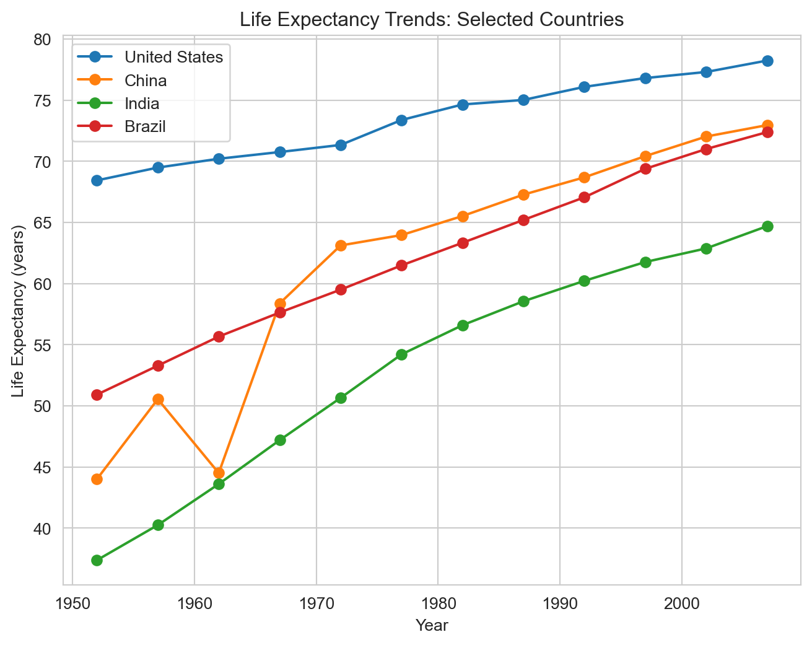
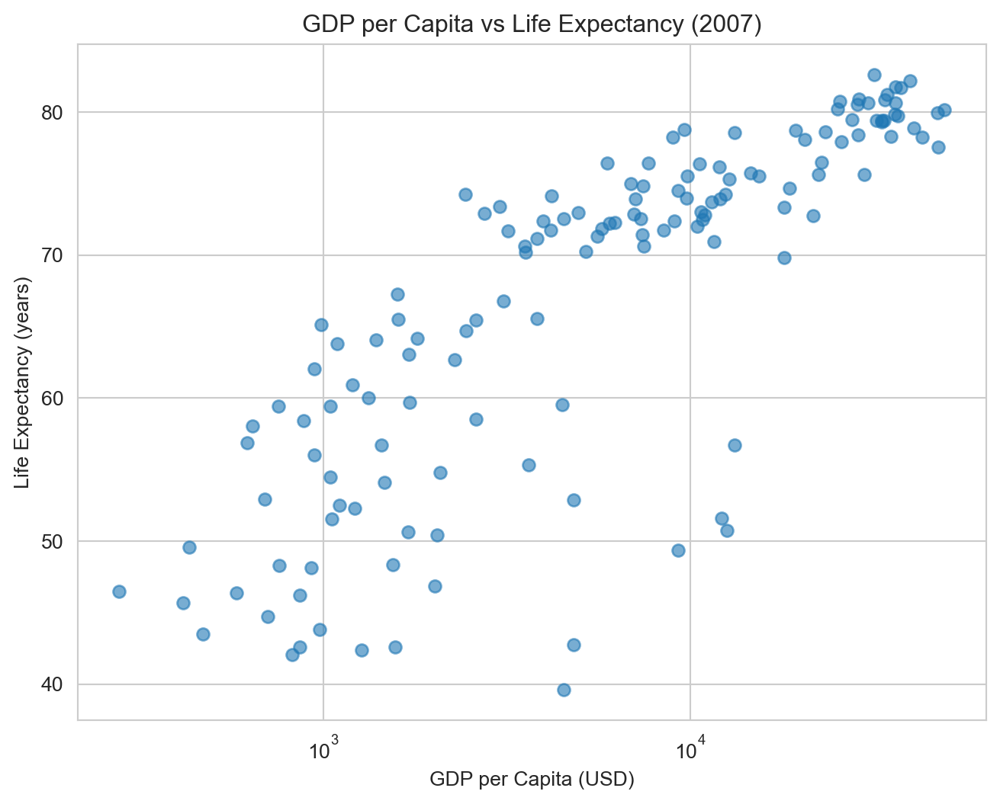
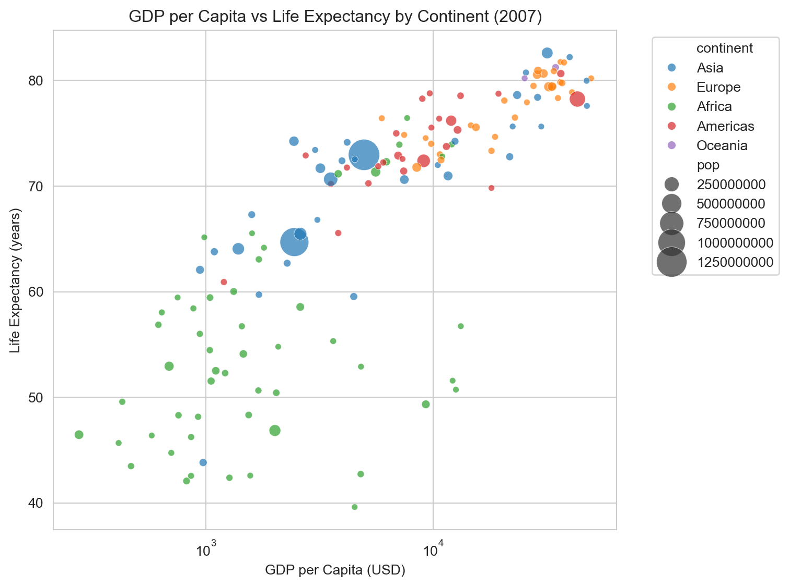
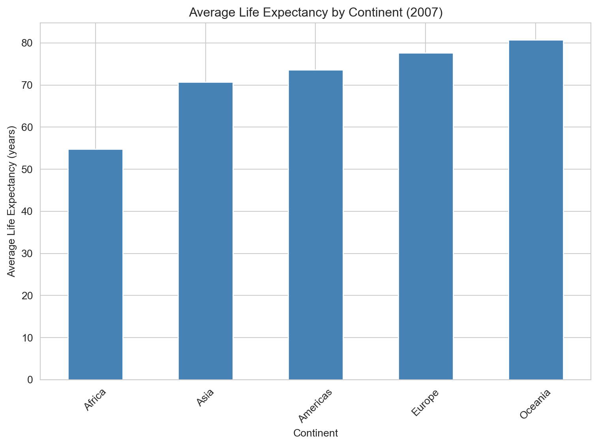
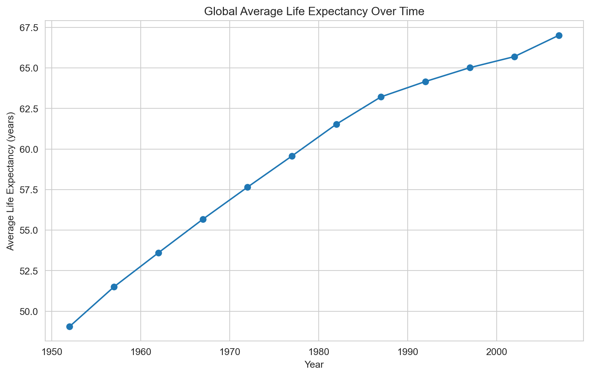

import pandas as pd
from causaldata import gapminderProcessing Data in Python
Learn to load, explore, visualize, and clean data using pandas and matplotlib. This tutorial covers loading tabular data into DataFrames, exploratory data analysis, creating visualizations, and handling missing values.
NoteRecognition and Attribution
This page modifies content from the Software Carpentry Python Novice Gapminder lesson, specifically Episodes 7 (Reading Tabular Data into DataFrames), 8 (Pandas DataFrames), and 9 (Plotting).
In this tutorial, you will learn the fundamentals of data processing in Python. We’ll cover how to load data using pandas, explore it through exploratory data analysis, create visualizations, and handle missing values.
TipPro Tip
When you see a piece of code you don’t understand, it’s okay to Google it or ask an LLM to explain it to you. Pros do this all the time. There is only so much information you can keep in your head at once. Of course, when using AI, be sure to verify.
Learning Objectives
By the end of this tutorial, you will be able to:
- Load tabular data into pandas DataFrames
- Explore data structure and calculate summary statistics
- Select and filter data using various methods
- Create visualizations to understand data patterns
- Identify and handle missing values appropriately
Introduction
Data processing is a fundamental skill for data analysis and research. Python’s pandas library provides powerful tools for working with tabular data, similar to spreadsheets but with much more flexibility and power. In this tutorial, we’ll use real-world data from Gapminder, which contains economic and health indicators for countries around the world.
Tip
This tutorial assumes you’ve completed the Coding in Python tutorial and are familiar with Python basics like variables, data types, and functions.
Loading Data into DataFrames
The first step in data processing is loading your data into a format you can work with. In Python, we use the pandas library to work with tabular data.
Importing Libraries
Let’s start by importing the libraries we’ll need:
The pandas library (abbreviated as pd by convention) is the primary tool for data manipulation in Python. The causaldata package provides easy access to several datasets commonly used in statistics and research, including Gapminder. If you do not have these libraries installed in your python virtual environment, you can add them by running uv add pandas causaldata from your terminal.
Loading the Gapminder Dataset
Now let’s load the Gapminder data:
# Load the data
df = gapminder.load_pandas().dataHere, we’ve created a variable called df (short for “DataFrame”) that contains our data. A DataFrame is pandas’ primary data structure for storing tabular data.
Note
If you have data in a CSV file instead, you can load it using pd.read_csv('filename.csv'). You can also specify which column should be used as the index using the index_col parameter, like this: pd.read_csv('filename.csv', index_col='country').
First Look at the Data
Let’s explore what we’ve loaded. The .head() method shows the first few rows:
df.head()| country | continent | year | lifeExp | pop | gdpPercap | |
|---|---|---|---|---|---|---|
| 0 | Afghanistan | Asia | 1952 | 28.801 | 8425333 | 779.445314 |
| 1 | Afghanistan | Asia | 1957 | 30.332 | 9240934 | 820.853030 |
| 2 | Afghanistan | Asia | 1962 | 31.997 | 10267083 | 853.100710 |
| 3 | Afghanistan | Asia | 1967 | 34.020 | 11537966 | 836.197138 |
| 4 | Afghanistan | Asia | 1972 | 36.088 | 13079460 | 739.981106 |
We can see that our DataFrame contains information about countries, including their continent, year, life expectancy, population, and GDP per capita.
To see the last few rows instead, use .tail():
df.tail()| country | continent | year | lifeExp | pop | gdpPercap | |
|---|---|---|---|---|---|---|
| 1699 | Zimbabwe | Africa | 1987 | 62.351 | 9216418 | 706.157306 |
| 1700 | Zimbabwe | Africa | 1992 | 60.377 | 10704340 | 693.420786 |
| 1701 | Zimbabwe | Africa | 1997 | 46.809 | 11404948 | 792.449960 |
| 1702 | Zimbabwe | Africa | 2002 | 39.989 | 11926563 | 672.038623 |
| 1703 | Zimbabwe | Africa | 2007 | 43.487 | 12311143 | 469.709298 |
Understanding DataFrame Structure
To get a comprehensive overview of our data’s structure, we use .info():
df.info()<class 'pandas.core.frame.DataFrame'>
RangeIndex: 1704 entries, 0 to 1703
Data columns (total 6 columns):
# Column Non-Null Count Dtype
--- ------ -------------- -----
0 country 1704 non-null object
1 continent 1704 non-null object
2 year 1704 non-null int64
3 lifeExp 1704 non-null float64
4 pop 1704 non-null int64
5 gdpPercap 1704 non-null float64
dtypes: float64(2), int64(2), object(2)
memory usage: 80.0+ KBThis tells us:
- The number of rows (entries) and columns
- The names of each column
- The data type of each column (e.g., object for text, int64 for integers, float64 for decimals)
- Whether there are any missing values
- How much memory the DataFrame uses
We can also access specific information:
# Get column names
print("Columns:", df.columns.tolist())
# Get the shape (rows, columns)
print("Shape:", df.shape)
# Get data types
print("\nData types:")
print(df.dtypes)Columns: ['country', 'continent', 'year', 'lifeExp', 'pop', 'gdpPercap']
Shape: (1704, 6)
Data types:
country object
continent object
year int64
lifeExp float64
pop int64
gdpPercap float64
dtype: objectExploratory Data Analysis
Now that we’ve loaded our data, let’s explore it more deeply. Exploratory Data Analysis (EDA) helps us understand what’s in our data and identify patterns, outliers, or issues.
DataFrame Anatomy
A DataFrame is a 2-dimensional table with rows and columns. Each column is actually a Series (pandas’ 1-dimensional data structure). Think of it like a spreadsheet where each column can contain different types of data.
Summary Statistics
The .describe() method provides summary statistics for numerical columns:
df.describe()| year | lifeExp | pop | gdpPercap | |
|---|---|---|---|---|
| count | 1704.00000 | 1704.000000 | 1.704000e+03 | 1704.000000 |
| mean | 1979.50000 | 59.474439 | 2.960121e+07 | 7215.327081 |
| std | 17.26533 | 12.917107 | 1.061579e+08 | 9857.454543 |
| min | 1952.00000 | 23.599000 | 6.001100e+04 | 241.165876 |
| 25% | 1965.75000 | 48.198000 | 2.793664e+06 | 1202.060309 |
| 50% | 1979.50000 | 60.712500 | 7.023596e+06 | 3531.846988 |
| 75% | 1993.25000 | 70.845500 | 1.958522e+07 | 9325.462346 |
| max | 2007.00000 | 82.603000 | 1.318683e+09 | 113523.132900 |
This gives us the count, mean, standard deviation, minimum, quartiles, and maximum for each numeric column.
For individual columns, we can calculate specific statistics:
print("Mean life expectancy:", df['lifeExp'].mean())
print("Median GDP per capita:", df['gdpPercap'].median())
print("Maximum population:", df['pop'].max())
print("Minimum year:", df['year'].min())Mean life expectancy: 59.474439366197174
Median GDP per capita: 3531.8469885
Maximum population: 1318683096
Minimum year: 1952Selecting Data
Pandas provides two main methods for selecting data from DataFrames:
.loc[]- Label-based selection (uses row and column names).iloc[]- Position-based selection (uses integer positions)
Selecting Columns
To select a single column:
# Select the lifeExp column
life_expectancy = df['lifeExp']
print(life_expectancy.head())0 28.801
1 30.332
2 31.997
3 34.020
4 36.088
Name: lifeExp, dtype: float64To select multiple columns:
# Select country, year, and life expectancy
subset = df[['country', 'year', 'lifeExp']]
print(subset.head()) country year lifeExp
0 Afghanistan 1952 28.801
1 Afghanistan 1957 30.332
2 Afghanistan 1962 31.997
3 Afghanistan 1967 34.020
4 Afghanistan 1972 36.088Selecting Rows
To select rows by position using .iloc[]:
# First 5 rows
df.iloc[0:5]| country | continent | year | lifeExp | pop | gdpPercap | |
|---|---|---|---|---|---|---|
| 0 | Afghanistan | Asia | 1952 | 28.801 | 8425333 | 779.445314 |
| 1 | Afghanistan | Asia | 1957 | 30.332 | 9240934 | 820.853030 |
| 2 | Afghanistan | Asia | 1962 | 31.997 | 10267083 | 853.100710 |
| 3 | Afghanistan | Asia | 1967 | 34.020 | 11537966 | 836.197138 |
| 4 | Afghanistan | Asia | 1972 | 36.088 | 13079460 | 739.981106 |
To select rows by label/index using .loc[]:
# Rows 0 through 5
df.loc[0:5]| country | continent | year | lifeExp | pop | gdpPercap | |
|---|---|---|---|---|---|---|
| 0 | Afghanistan | Asia | 1952 | 28.801 | 8425333 | 779.445314 |
| 1 | Afghanistan | Asia | 1957 | 30.332 | 9240934 | 820.853030 |
| 2 | Afghanistan | Asia | 1962 | 31.997 | 10267083 | 853.100710 |
| 3 | Afghanistan | Asia | 1967 | 34.020 | 11537966 | 836.197138 |
| 4 | Afghanistan | Asia | 1972 | 36.088 | 13079460 | 739.981106 |
| 5 | Afghanistan | Asia | 1977 | 38.438 | 14880372 | 786.113360 |
Important
Important difference: .loc[] slices are inclusive on both ends (includes index 5), while .iloc[] follows Python convention and excludes the end (stops before index 5).
Selecting Specific Values
To select a specific value:
# Life expectancy for the first row
first_life_exp = df.loc[0, 'lifeExp']
print(f"First life expectancy value: {first_life_exp}")First life expectancy value: 28.801Boolean Filtering
One of the most powerful features of pandas is the ability to filter data using Boolean conditions. This is sometimes called “Boolean masking.”
# Create a Boolean mask for data from 2007
mask_2007 = df['year'] == 2007
# Use the mask to filter the data
data_2007 = df[mask_2007]
print(f"Rows in 2007: {len(data_2007)}")
print(data_2007.head())Rows in 2007: 142
country continent year lifeExp pop gdpPercap
11 Afghanistan Asia 2007 43.828 31889923 974.580338
23 Albania Europe 2007 76.423 3600523 5937.029526
35 Algeria Africa 2007 72.301 33333216 6223.367465
47 Angola Africa 2007 42.731 12420476 4797.231267
59 Argentina Americas 2007 75.320 40301927 12779.379640You can combine multiple conditions:
# High GDP countries in 2007
high_gdp_2007 = df[(df['year'] == 2007) & (df['gdpPercap'] > 30000)]
print(f"High GDP countries in 2007: {len(high_gdp_2007)}")
print(high_gdp_2007[['country', 'gdpPercap']])High GDP countries in 2007: 20
country gdpPercap
71 Australia 34435.36744
83 Austria 36126.49270
119 Belgium 33692.60508
251 Canada 36319.23501
419 Denmark 35278.41874
527 Finland 33207.08440
539 France 30470.01670
575 Germany 32170.37442
671 Hong Kong, China 39724.97867
695 Iceland 36180.78919
755 Ireland 40675.99635
803 Japan 31656.06806
863 Kuwait 47306.98978
1091 Netherlands 36797.93332
1151 Norway 49357.19017
1367 Singapore 47143.17964
1475 Sweden 33859.74835
1487 Switzerland 37506.41907
1607 United Kingdom 33203.26128
1619 United States 42951.65309
Tip
When combining conditions, use & for “and” and | for “or”. Make sure to put parentheses around each condition!
Grouping and Aggregation
Often, we want to compute statistics for different groups in our data. The .groupby() method is perfect for this:
# Average life expectancy by continent
continent_life_exp = df.groupby('continent')['lifeExp'].mean()
print(continent_life_exp)continent
Africa 48.865330
Americas 64.658737
Asia 60.064903
Europe 71.903686
Oceania 74.326208
Name: lifeExp, dtype: float64In the example above, we grouped the dataframe rows by the values in the continent column, and then for each group, the lifeExp column was selected and the mean of that column determined for each group… All in one line of code!
You can group by multiple columns and calculate multiple statistics:
# Multiple statistics by continent
continent_stats = df.groupby('continent').agg({
'lifeExp': ['mean', 'min', 'max'],
'gdpPercap': 'mean',
'pop': 'sum'
})
print(continent_stats) lifeExp gdpPercap pop
mean min max mean sum
continent
Africa 48.865330 23.599 76.442 2193.754578 6187585961
Americas 64.658737 37.579 80.653 7136.110356 7351438499
Asia 60.064903 28.801 82.603 7902.150428 30507333901
Europe 71.903686 43.585 81.757 14469.475533 6181115304
Oceania 74.326208 69.120 81.235 18621.609223 212992136Data Visualization
A picture is worth a thousand words. Visualizations help us understand patterns and relationships in data that might not be obvious from tables of numbers. Python provides several libraries for creating visualizations, with matplotlib and seaborn being the most popular.
Setting Up
Let’s import the visualization libraries:
import matplotlib.pyplot as plt
import seaborn as sns
# Set a nice style
sns.set_style("whitegrid")
Note
From our imports, plt is now our reference (a handle, if you will) to the tools contained in matplotlib.pyplot. The same is true for sns and seaborn.
Line Plots
Line plots are great for showing trends over time. Let’s look at how life expectancy has changed for a specific country:
# Filter data for United States
us_data = df[df["country"] == "United States"]
# Create line plot
plt.figure(figsize=(8, 6))
plt.plot(us_data["year"], us_data["lifeExp"], marker="o")
plt.xlabel("Year")
plt.ylabel("Life Expectancy (years)")
plt.title("Life Expectancy in the United States Over Time")
plt.grid(True)
plt.show()
We can compare multiple countries:
# Compare several countries
countries_to_compare = ["United States", "China", "India", "Brazil"]
plt.figure(figsize=(8, 6))
for country in countries_to_compare:
country_data = df[df["country"] == country]
plt.plot(country_data["year"], country_data["lifeExp"], marker="o", label=country)
plt.xlabel("Year")
plt.ylabel("Life Expectancy (years)")
plt.title("Life Expectancy Trends: Selected Countries")
plt.legend()
plt.grid(True)
plt.show()
Note
The code above uses a for-loop to repeat the same action multiple times. The for country in countries_to_compare: line tells Python to go through each country name in our list, one at a time. For each country, Python executes the indented code below it: first filtering the data to get only that country’s rows, then plotting a line for that country. This is much more efficient than writing the same filtering and plotting code four separate times—once for each country. The loop automatically stops after processing the last country in the list.
Scatter Plots
Scatter plots help us see relationships between two variables. Let’s explore the relationship between GDP per capita and life expectancy:
# Scatter plot for 2007 data
# Note: We're redefining `data_2007` here for clarity, but you could reuse the object from earlier.
data_2007 = df[df["year"] == 2007]
plt.figure(figsize=(8, 6))
plt.scatter(data_2007["gdpPercap"], data_2007["lifeExp"], alpha=0.6)
plt.xlabel("GDP per Capita (USD)")
plt.ylabel("Life Expectancy (years)")
plt.title("GDP per Capita vs Life Expectancy (2007)")
plt.xscale("log") # Use log scale for GDP
plt.grid(True)
plt.show()
We can enhance this by coloring points by continent:
plt.figure(figsize=(8, 6))
sns.scatterplot(
data=data_2007,
x="gdpPercap",
y="lifeExp",
hue="continent",
size="pop",
sizes=(20, 500),
alpha=0.7,
)
plt.xlabel("GDP per Capita (USD)")
plt.ylabel("Life Expectancy (years)")
plt.title("GDP per Capita vs Life Expectancy by Continent (2007)")
plt.xscale("log")
plt.legend(bbox_to_anchor=(1.05, 1), loc="upper left")
plt.tight_layout()
plt.show()
Bar Charts
Bar charts are useful for comparing values across categories:
# Average life expectancy by continent in 2007
continent_2007 = data_2007.groupby("continent")["lifeExp"].mean().sort_values()
plt.figure(figsize=(8, 6))
continent_2007.plot(kind="bar", color="steelblue")
plt.xlabel("Continent")
plt.ylabel("Average Life Expectancy (years)")
plt.title("Average Life Expectancy by Continent (2007)")
plt.xticks(rotation=45)
plt.tight_layout()
plt.show()
Using Pandas Built-in Plotting
Pandas DataFrames have built-in plotting methods that can be more convenient:
# Average life expectancy over time
yearly_avg = df.groupby("year")["lifeExp"].mean()
plt.figure(figsize=(10, 6))
yearly_avg.plot(marker="o")
plt.xlabel("Year")
plt.ylabel("Average Life Expectancy (years)")
plt.title("Global Average Life Expectancy Over Time")
plt.grid(True)
plt.show()
Saving Figures
To save a figure, use plt.savefig() before plt.show():
plt.figure(figsize=(10, 6))
plt.plot(us_data["year"], us_data["lifeExp"], marker="o")
plt.xlabel("Year")
plt.ylabel("Life Expectancy (years)")
plt.title("Life Expectancy in the United States")
plt.savefig("us_life_expectancy.png", dpi=300, bbox_inches="tight")
plt.show()Running this code will save the plot as a PNG file on your computer called us_life_expectancy.png.
Dealing with Missingness
Missing data is a common challenge in data analysis. Understanding how to identify and handle missing values is crucial for producing reliable results.
Why Missing Data Matters
Missing data can:
- Reduce the statistical power of your analysis
- Introduce bias if the missingness is systematic
- Cause errors in calculations if not handled properly
Identifying Missing Values
In pandas, missing values are typically represented as NaN (Not a Number). Let’s check if our Gapminder data has any missing values:
# Check for missing values in each column
print("Missing values per column:")
print(df.isnull().sum())Missing values per column:
country 0
continent 0
year 0
lifeExp 0
pop 0
gdpPercap 0
dtype: int64Good news! The Gapminder dataset we’re using has no missing values. However, let’s create a sample dataset with missing values to learn how to handle them:
# Create a sample dataset with missing values
import numpy as np
sample_data = df[df["country"].isin(["United States", "Canada", "Mexico"])].copy()
sample_data.loc[2, "lifeExp"] = np.nan
sample_data.loc[5, "gdpPercap"] = np.nan
sample_data.loc[8, "pop"] = np.nan
print("Missing values in sample data:")
print(sample_data.isnull().sum())Missing values in sample data:
country 3
continent 3
year 3
lifeExp 3
pop 3
gdpPercap 3
dtype: int64We can also visualize which specific rows have missing values:
# Show rows with any missing values
print("\nRows with missing values:")
print(
sample_data[sample_data.isnull().any(axis=1)][
["country", "year", "lifeExp", "gdpPercap", "pop"]
]
)
Rows with missing values:
country year lifeExp gdpPercap pop
2 NaN NaN NaN NaN NaN
5 NaN NaN NaN NaN NaN
8 NaN NaN NaN NaN NaNRows 2, 5, and 8, as expected!
Handling Missing Values
There are several strategies for dealing with missing data:
1. Dropping Missing Values
The simplest approach is to remove rows or columns with missing values:
# Drop any rows with missing values
cleaned_data = sample_data.dropna()
print(f"Original rows: {len(sample_data)}, After dropping: {len(cleaned_data)}")Original rows: 39, After dropping: 36You can also drop rows only if specific columns have missing values:
# Drop rows only if lifeExp is missing
cleaned_life = sample_data.dropna(subset=["lifeExp"])
print(f"After dropping rows with missing lifeExp: {len(cleaned_life)}")After dropping rows with missing lifeExp: 36
Warning
Be careful when dropping data! If you have many missing values, you might lose a lot of information. Always check how much data you’re removing.
2. Filling Missing Values
Instead of dropping data, you can fill missing values with a specific value:
# Fill missing values with the column mean
sample_filled = sample_data.copy()
sample_filled["lifeExp"] = sample_filled["lifeExp"].fillna(
sample_data["lifeExp"].mean()
)
sample_filled["gdpPercap"] = sample_filled["gdpPercap"].fillna(
sample_data["gdpPercap"].mean()
)
sample_filled["pop"] = sample_filled["pop"].fillna(sample_data["pop"].mean())
print("After filling with mean:")
print(
sample_filled[sample_data.isnull().any(axis=1)][
["country", "year", "lifeExp", "gdpPercap", "pop"]
]
)After filling with mean:
country year lifeExp gdpPercap pop
2 NaN NaN 71.263361 18798.67012 1.070295e+08
5 NaN NaN 71.263361 18798.67012 1.070295e+08
8 NaN NaN 71.263361 18798.67012 1.070295e+08Other filling strategies include:
# Fill with a specific value
sample_data["lifeExp"].fillna(0)
# Forward fill (use the last valid value)
sample_data["lifeExp"].ffill()
# Backward fill (use the next valid value)
sample_data["lifeExp"].bfill()3. Interpolation
For time series data (data where we can view changes in a variable over time), interpolation can provide more reasonable estimates. The sample we have chosen to illustrate missingness is too small to demonstrate this adequately, but the code would look like this:
# Interpolate missing values
sample_interpolated = sample_data.copy()
sample_interpolated["lifeExp"] = sample_interpolated["lifeExp"].interpolate()
sample_interpolated["gdpPercap"] = sample_interpolated["gdpPercap"].interpolate()
sample_interpolated["pop"] = sample_interpolated["pop"].interpolate()
print("After interpolation:")
print(
sample_interpolated[sample_data.isnull().any(axis=1)][
["country", "year", "lifeExp", "gdpPercap", "pop"]
]
)Choosing the Right Strategy
Which strategy to use depends on:
- Why the data is missing: Random missingness vs systematic patterns
- How much data is missing: Small amounts can often be dropped
- The nature of the variable: Time series might benefit from interpolation
- Your analysis goals: Some methods may introduce less bias than others
Tip
Important note: Many pandas statistical functions automatically ignore NaN values. For example, df['lifeExp'].mean() will calculate the mean of only the non-missing values.
Practice Exercises
Let’s practice what we’ve learned with some exercises.
TipPro Tip
Try to write the code by yourself before revealing the solution!
Exercise 1: Loading and Exploring
Using the Gapminder dataset:
- Load the data
- Display information about the DataFrame structure
- Find which year has data for the most countries
- Calculate the overall average life expectancy across all countries and years
Show the code
# If starting fresh, load the data first
from causaldata import gapminder
df = gapminder.load_pandas().data
# 2. Display information
df.info()
# 3. Find year with most countries
countries_per_year = df.groupby("year")["country"].nunique()
max_year = countries_per_year.idxmax()
print(
f"Year with most countries: {max_year} ({countries_per_year[max_year]} countries)"
)
# 4. Calculate overall average life expectancy
overall_avg = df["lifeExp"].mean()
print(f"Overall average life expectancy: {overall_avg:.2f} years")Exercise 2: Filtering and Aggregation
- Filter the data to include only African countries in the year 2007
- Calculate the average GDP per capita for these countries
- Find the African country with the highest life expectancy in 2007
- Count how many African countries had a life expectancy above 50 years in 2007
Show the code
# 1. Filter for African countries in 2007
africa_2007 = df[(df["continent"] == "Africa") & (df["year"] == 2007)]
# 2. Calculate average GDP per capita
avg_gdp = africa_2007["gdpPercap"].mean()
print(f"Average GDP per capita in Africa (2007): ${avg_gdp:.2f}")
# 3. Find country with highest life expectancy
max_life_idx = africa_2007["lifeExp"].idxmax()
max_life_country = africa_2007.loc[max_life_idx, "country"]
max_life_value = africa_2007.loc[max_life_idx, "lifeExp"]
print(f"Highest life expectancy: {max_life_country} ({max_life_value:.2f} years)")
# 4. Count countries with life expectancy > 50
count_above_50 = (africa_2007["lifeExp"] > 50).sum()
total_countries = len(africa_2007)
print(f"Countries with life expectancy > 50: {count_above_50} out of {total_countries}")Exercise 3: Visualization
- Create a line plot showing how the average global GDP per capita changed over time
- Create a scatter plot comparing population and life expectancy for the year 2007
- Create a bar chart showing the average life expectancy for each continent in 2007
Show the code
import matplotlib.pyplot as plt
# 1. Line plot of average global GDP over time
avg_gdp_by_year = df.groupby("year")["gdpPercap"].mean()
plt.figure(figsize=(8, 6))
plt.plot(avg_gdp_by_year.index, avg_gdp_by_year.values, marker="o")
plt.xlabel("Year")
plt.ylabel("Average GDP per Capita (USD)")
plt.title("Global Average GDP per Capita Over Time")
plt.grid(True)
plt.show()
# 2. Scatter plot of population vs life expectancy (2007)
data_2007 = df[df["year"] == 2007]
plt.figure(figsize=(10, 6))
plt.scatter(data_2007["pop"], data_2007["lifeExp"], alpha=0.6)
plt.xlabel("Population")
plt.ylabel("Life Expectancy (years)")
plt.title("Population vs Life Expectancy (2007)")
plt.xscale("log") # Log scale for population
plt.grid(True)
plt.show()
# 3. Bar chart of average life expectancy by continent (2007)
continent_life = data_2007.groupby("continent")["lifeExp"].mean().sort_values()
plt.figure(figsize=(8, 6))
continent_life.plot(kind="bar", color="steelblue")
plt.xlabel("Continent")
plt.ylabel("Average Life Expectancy (years)")
plt.title("Average Life Expectancy by Continent (2007)")
plt.xticks(rotation=45)
plt.tight_layout()
plt.show()Exercise 4: Working with Missing Data
Create a subset of data and practice handling missing values:
- Create a subset with data from European countries in 2007
- Randomly set 10% of the life expectancy values to NaN
- Count how many missing values you created
- Fill the missing values using the mean life expectancy
- Compare the original and filled values
Show the code
import numpy as np
# 1. Create subset
europe_2007 = df[(df["continent"] == "Europe") & (df["year"] == 2007)].copy()
# 2. Randomly set 10% to NaN
np.random.seed(42) # For reproducibility
n_missing = int(len(europe_2007) * 0.1)
missing_indices = np.random.choice(europe_2007.index, n_missing, replace=False)
europe_2007.loc[missing_indices, "lifeExp"] = np.nan
# 3. Count missing values
n_missing_actual = europe_2007["lifeExp"].isnull().sum()
print(f"Missing values created: {n_missing_actual}")
# 4. Fill with mean
mean_life = europe_2007["lifeExp"].mean()
europe_filled = europe_2007.copy()
europe_filled["lifeExp"] = europe_filled["lifeExp"].fillna(mean_life)
# 5. Compare
print("\nComparison of original and filled values:")
comparison = europe_filled.loc[missing_indices, ["country", "lifeExp"]]
comparison.columns = ["country", "filled_lifeExp"]
print(comparison)
print(f"\nMean value used for filling: {mean_life:.2f}")Key Points
- Use
pandasto load and manipulate tabular data in Python - DataFrames are the primary structure for working with data tables
- Use
.head(),.info(), and.describe()to explore data structure and content - Select data using
.loc[](label-based) or.iloc[](position-based) - Filter data using Boolean conditions for targeted analysis
- Use
.groupby()for calculating statistics across groups - Create visualizations with
matplotlibandseabornto understand patterns - Identify missing values with
.isnull()and handle them appropriately - Choose missing data strategies based on why data is missing and analysis goals
What’s Next?
Now that you understand data processing fundamentals, you can explore:
- Advanced data manipulation techniques (merging, reshaping, pivoting)
- More sophisticated visualizations (heat maps, violin plots, pair plots)
- Statistical analysis and hypothesis testing
- Machine learning with scikit-learn
- Working with time series data
- Data cleaning and preprocessing techniques
Continue practicing these fundamentals as they form the foundation for all data analysis work in Python!